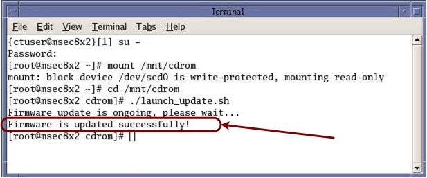

Upon completion, the message “Firmware updates successfully” should appear.
Illustration 3: HSDA Firmware Flash Status

| NOTE: | Flashing process will take approximately 20 minutes. |
| NOTE: | If “Firmware update failed” message appears, view the following log file for further details. Log file can be found in the /var/log directory. Log file name: hsda_fm_update.log Repeat ” launch_update.sh” script. |